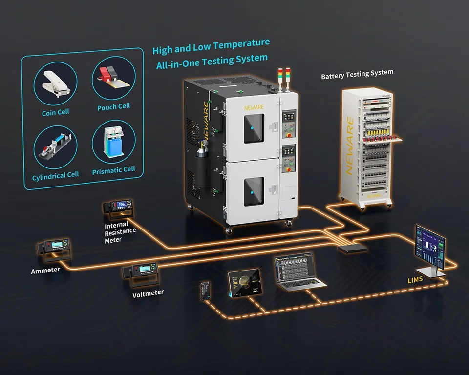

Chambers · WGDW series
WGDW-20L
A 20 L benchtop high/low temperature chamber for temperature-dependent characterisation, designed to sit next to the cycler rather than in a separate room.

| DUT | Small-format cells, temperature characterisation |
|---|---|
| Voltage | — |
| Current | — |
| Ranges | — |
| Channels | — |
| Accuracy | ±0.3 °C |
| Current response | — |
| Data logging | — |
| Energy recovery | — |
Full specifications, calibration certificates and configuration options are provided with the quotation.
Typical delivery 4–8 weeks
Related instruments